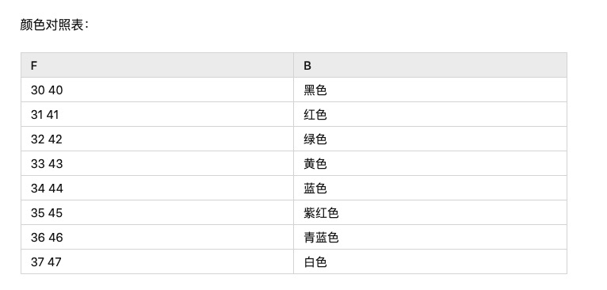

个人比较习惯的一些命令行和终端配置，留在博客里方便以后复制粘贴。
终端我一般用bash或者zsh，bash经常是在公司里使用的，zsh就在自己机器上用
bashrc配置
1
2
3
4
5
6
7
8
9
10
11
12
13
14
15
16
17
18
19
20
21
22
23
24
25
|
function git_branch_prompt()
{
local branch=$(git symbolic-ref --short -q HEAD 2>/dev/null)
if [ $branch ]; then echo "|$branch"; fi
}
export PS1="\[\033[01;36m\]\u@\[\033[01;33m\]\h.$add \[\033[0;36m\]\w\[\033[0;32m\]\$(git_branch_prompt)\[\033[37;36m\]\\$ \[\033[00m\]"
alias mv="mv -i"
alias cp="cp -i"
alias rm="rm -i"
function sloc()
{
myname=`hostname`
myuser=`whoami`
mypath=`pwd`
for arg in "$@"
do
echo $myuser"@"$myname":"$mypath"/"$arg
done
}
|
主要是命令行样式的修改看心情，PS1的颜色修改见下图

zsh配置
- 安装
oh-my-zsh
- 在
.zshrc中修改字段ZSH_THEME="pygmalion"
只需要在bash里配置（zsh自带），避免了通过ctrl + r来搜索历史命令的麻烦
1
2
3
4
| "\e[A": history-search-backward
"\e[B": history-search-forward
set show-all-if-ambiguous on
set completion-ignore-case on
|
ssh配置
给需要链接的远程服务器做个简单配置。编辑.ssh/config, 如下：
1
2
3
4
| Host 255.255.255.255
HostName fake_server
User chenchu.zs
Port 8088
|
有时候远程服务器长时间没有操作会自动把你踢下来，配置一下自动重连和记忆功能，如下：
1
2
3
4
5
6
7
8
9
10
11
| Host *
ControlMaster auto
ControlPath /tmp/ssh_connection_%h_%p_%r.sock
ServerAliveInterval 80
ServerAliveCountMax 6
ForwardAgent yes
CheckHostIP no
Compression yes
ControlPersist 72h
StrictHostKeyChecking=no
GSSAPIAuthentication=no
|